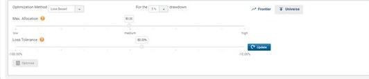

Progressive disclosure on the optimization panel
The tension: Max Allocation and Loss Tolerance are the two controls that change everything downstream, but they were buried in a collapsed accordion at the bottom of the page, below the fold.
I made the optimization panel expand in place with the controls laid out horizontally - method and drawdown on the left, the two sliders taking the full width beside them. Optimize and Update sit at the end of the control flow rather than floating separately, so the sequence reads left to right: choose method, set constraints, run.
